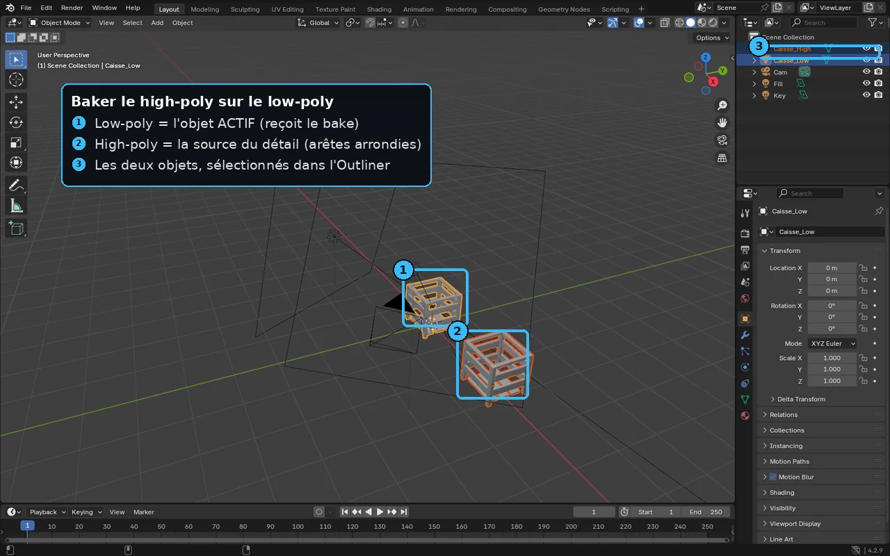
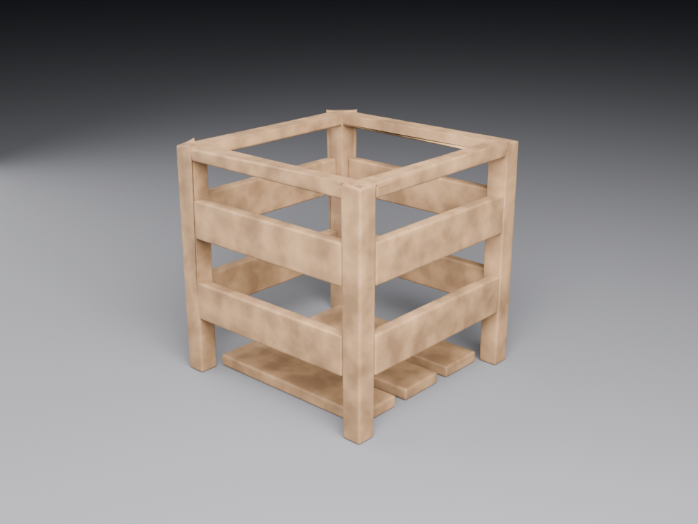

F8 — Le baking de maps
À la fin de cette leçon, tu sauras :
- Expliquer le principe du baking : projeter l'information d'un high-poly sur les UV d'un low-poly via des rayons, et la stocker en texture.
- Décomposer une normal map (RGB = vecteur XYZ) et distinguer tangent space et object space, en sachant lequel choisir.
- Diagnostiquer un éclairage « en creux inversé » causé par la convention OpenGL (Y+) contre DirectX (Y−).
- Nommer les autres maps cuites (AO, curvature, thickness, position, world normal) et leur usage en texturisation.
- Régler une cage et une ray distance, et corriger les artefacts classiques (skew, intersections, gradients sales, padding).
Pourquoi c'est important
Imagine une caisse de munitions militaire pour un jeu : dans la réalité, elle est couverte de rivets, de soudures, de bosses, de lettres en relief estampées dans le métal. Modéliser tout ce détail en vraie géométrie demanderait des centaines de milliers de polygones — bien trop lourd pour une scène où cinquante caisses peuvent apparaître à l'écran. Pourtant, le joueur doit voir ces rivets accrocher la lumière.
Le baking (« cuisson » en anglais) résout exactement ce dilemme. On sculpte ou modélise une version ultra-détaillée de l'objet, le high-poly, puis on « cuit » son détail dans des textures qu'on applique sur une version légère, le low-poly. Le résultat : la caisse n'a peut-être que 500 triangles, mais elle réagit à la lumière comme si elle en avait un million. Le détail visuel est conservé ; le coût géométrique, lui, s'effondre.
C'est l'une des étapes les plus structurantes du pipeline d'asset : elle se situe juste après l'UV mapping et alimente toute la texturisation PBR. Une normal map, l'AO, la curvature qui pilote les masques d'usure dans Substance Painter — tout cela provient d'un bake. Un bake raté (rayons qui débordent, normales sales, mauvaise convention) contamine ensuite chaque texture, et la faute remonte jusqu'au moteur. Savoir baker proprement, c'est savoir produire des assets qui tiennent la route partout, de Blender à Unreal.
Théorie en profondeur
1. Le principe : projeter le détail par des rayons
Le baking repose sur une idée géométrique simple. On place le low-poly et le high-poly au même endroit dans l'espace, l'un « dans » l'autre. Puis, pour chaque texel du low-poly (chaque pixel de sa future texture, posé sur sa surface via les UV), le moteur de bake lance un rayon.
Ce rayon part de la surface du low-poly et file le long de la normale (perpendiculairement à la surface, voir F4). Il finit par frapper le high-poly à proximité. Au point d'impact, le moteur lit l'information qui l'intéresse — l'orientation exacte de la surface détaillée, son occlusion, sa courbure… — et l'enregistre dans le texel de départ. En répétant l'opération pour tous les texels, on remplit une texture complète qui « décrit » le high-poly vu depuis la peau du low-poly.
C'est exactement comme prendre l'empreinte d'une pièce en relief : on presse une feuille souple (le low-poly, plat) contre l'objet sculpté (le high-poly), et la feuille enregistre les creux et les bosses. La feuille reste fine, mais elle contient l'information du relief.
Attention au faux ami : dans les moteurs, on parle aussi de « baking de l'éclairage » (lightmaps). C'est un autre sujet : là on précalcule des ombres et de la lumière dans une texture. Ici, on parle du transfert de détail géométrique du high-poly vers le low-poly. Même mot, deux opérations distinctes.
2. La normal map en profondeur : une couleur qui encode un vecteur
La star du baking est la normal map. Pour la comprendre, il faut accepter une idée contre-intuitive : ce n'est pas une image, c'est un tableau de vecteurs déguisé en image.
Souviens-toi (F4) qu'une normale est une flèche perpendiculaire à la surface, qui indique « de quel côté regarde » le point. C'est elle qui dit au moteur comment la lumière doit rebondir. Or une direction dans l'espace, c'est trois nombres : X, Y, Z. Et une couleur, c'est aussi trois nombres : R, V, B. L'astuce du baking : ranger chaque composante du vecteur dans un canal de couleur.
- Le canal Rouge stocke la composante X de la normale (gauche ↔ droite).
- Le canal Vert stocke la composante Y (bas ↔ haut).
- Le canal Bleu stocke la composante Z (vers l'extérieur ↔ vers l'intérieur).
Comme une couleur va de 0 à 1 mais qu'un vecteur va de −1 à +1, on encode avec une petite transformation : canal = (composante + 1) / 2. Une normale qui pointe « tout droit vers l'extérieur » (X=0, Y=0, Z=1) donne donc R=0,5, V=0,5, B=1 → un violet-bleu. C'est pour ça qu'une normal map au repos a cette teinte lavande caractéristique : la majorité de ses texels regardent « tout droit », et seuls les détails inclinent le vecteur, faisant virer la couleur vers le rouge, le vert ou le cyan.
Le bleu (canal Z) est presque toujours élevé, parce que la plupart des micro-surfaces regardent globalement « vers le dehors ». C'est aussi pourquoi une normal map se lit obligatoirement en linéaire / Non-Color (jamais sRGB) : ce sont des coordonnées, pas une couleur perçue par l'œil. Une normal map lue en sRGB éclaire de travers (rappel F7).
Tangent space : le standard, qui suit la surface
Il existe deux référentiels pour encoder ces vecteurs. Le plus courant, et le réglage par défaut partout, est le tangent space (« espace tangent »). Ici, le vecteur n'est pas exprimé par rapport au monde, mais relativement à la surface locale : « Z » pointe toujours vers l'extérieur de la face, « X » et « Y » suivent l'orientation des UV de cette face.
L'avantage est décisif : comme tout est relatif à la surface, la normal map reste valable même si le mesh bouge. Tu peux tourner l'objet, le plier, l'animer (un personnage qui marche, un drapeau qui ondule) — le détail reste correct, parce qu'il « voyage » avec la surface. C'est aussi le tangent space qui permet de réutiliser la même portion de texture sur des îlots symétriques. C'est pour ces raisons qu'il domine en jeu temps réel. Visuellement : une normal map tangent space est majoritairement bleue.
Object space : arc-en-ciel, pour les objets rigides
L'autre référentiel est l'object space (« espace objet ») : chaque vecteur est exprimé par rapport au repère de l'objet entier, indépendamment de la surface locale. Du coup les couleurs partent dans toutes les directions selon l'orientation des faces : une normal map object space est multicolore, « arc-en-ciel » (rouge à gauche, vert en haut, etc.).
Avantage : un décodage plus simple et parfois un poil plus précis. Inconvénient majeur : elle est rigidement liée à la forme. Si le mesh se déforme ou s'anime, la map devient fausse. On la réserve donc aux objets parfaitement rigides (un casque, un rocher qui ne bouge pas) et à certains pipelines spécifiques. En game art généraliste, on travaille presque toujours en tangent space.
La convention OpenGL vs DirectX : la cause n°1 du relief inversé
Voici le piège qui fait perdre des heures à tout débutant. Tout le monde est d'accord sur les canaux R (X) et B (Z), mais pas sur le sens du canal Vert (Y). Deux conventions s'affrontent :
- OpenGL (dit « Y+ ») : le vert pointe vers le haut. Les bosses semblent éclairées par le haut.
- DirectX (dit « Y− ») : le vert est inversé, il pointe vers le bas.
La seule différence entre les deux, c'est le canal Vert retourné. Mais cette inversion a une conséquence spectaculaire : si tu utilises une normal map de la mauvaise convention, le moteur croit que les bosses sont des creux et inversement. L'éclairage devient « à l'envers » : les rivets paraissent enfoncés, les rainures ressortent, et l'objet semble bizarrement « gonflé » quand la lumière bouge. C'est le symptôme classique du relief inversé.
Repères pratiques pour les deux moteurs de cette formation :
| Logiciel / Moteur | Convention attendue | Note |
|---|---|---|
| Unity | OpenGL (Y+) | Importe des normal maps Y+. Exporte/cuis en OpenGL pour Unity. |
| Unreal Engine | DirectX (Y−) | Attend du Y−. Une map OpenGL y paraîtra creusée à l'envers. |
| Blender (Principled) | OpenGL (Y+) | Comme Unity ; sinon il faut inverser le canal vert. |
| Substance Painter (viewport) | OpenGL par défaut | À l'export, choisis le preset du moteur cible (Unity = OpenGL, Unreal = DirectX). |
Dans le doute, regarde le canal Vert isolé : pose-toi sur une bosse éclairée d'en haut. Si la moitié supérieure de la bosse est claire dans le vert → OpenGL (Y+). Si c'est la moitié inférieure → DirectX (Y−). Pour convertir l'une en l'autre, il suffit d'inverser le canal vert — c'est une opération sans perte, faisable dans Substance, Photoshop ou un nœud de moteur.
3. Les autres maps qu'on cuit
La normal map est la plus connue, mais un bake en produit toute une famille. Chacune lit une information différente au point d'impact du rayon sur le high-poly.
| Map cuite | Ce qu'elle enregistre | À quoi elle sert |
|---|---|---|
| Normal | L'orientation détaillée de la surface (vecteur) | Faire réagir la lumière comme sur le high-poly, sans polygones. |
| Ambient Occlusion (AO) | À quel point chaque point est « coincé » dans un recoin | Assombrir les creux ; base de saleté et de profondeur en texturisation. |
| Curvature | Si la surface est convexe (arête saillante) ou concave (creux) | Masques d'usure dans Substance : l'usure se concentre sur les arêtes saillantes. |
| Thickness | L'épaisseur de matière « derrière » chaque point (rayons vers l'intérieur) | Translucidité (cire, peau, feuilles), saleté dans les zones fines. |
| Position | La position 3D de chaque point, encodée en couleur | Effets de dégradé sur l'objet (poussière qui monte du bas, gradients verticaux). |
| World Space Normal | La normale exprimée dans le repère du monde | Masques par orientation (ex. neige sur les faces « vers le haut »). |
Ces maps secondaires forment ce qu'on appelle les « mesh maps » dans Substance Painter : elles ne s'affichent pas forcément telles quelles, mais nourrissent les masques procéduraux. Par exemple, un effet d'usure réaliste combine la curvature (pour cibler les arêtes) et l'AO (pour épargner les recoins protégés). Sans bake de curvature, l'usure procédurale n'a aucune information sur où mordre : elle devient aléatoire et fausse. C'est pourquoi on cuit toujours ces maps avant de texturer.
4. La cage : contrôler jusqu'où vont les rayons
Le talon d'Achille du baking, c'est que les rayons partent du low-poly et peuvent partir n'importe où. Si un rayon est trop court, il ne touche pas le high-poly (texel vide). S'il est trop long, ou mal orienté, il peut traverser une pièce et frapper le mauvais morceau du high-poly. C'est là qu'intervient la cage.
Une cage est une enveloppe — une copie légèrement gonflée du low-poly — qui définit le volume de recherche des rayons. Concrètement : les rayons ne partent plus de la surface elle-même, mais de la surface de la cage, et s'arrêtent à la surface du low-poly. Cela donne deux contrôles :
- La cage doit englober tout le high-poly (sinon des bosses dépassent et ne sont pas captées).
- La cage ne doit pas être trop large (sinon ses rayons franchissent l'espace entre deux pièces voisines et capturent la mauvaise surface — le débordement).
Quand on n'a pas de cage explicite, on utilise plutôt une ray distance : une distance maximale vers l'avant (Max Frontal Distance, vers l'extérieur) et vers l'arrière (Max Rear Distance, vers l'intérieur). C'est l'équivalent d'une cage uniforme : « cherche le high-poly jusqu'à tant de centimètres devant et derrière la surface, pas plus loin ». La cage manuelle reste plus fine pour les formes compliquées, parce qu'on peut la gonfler localement.

5. Les artefacts : ce qui rate, et pourquoi
Comprendre pourquoi un bake foire permet de le réparer sans tâtonner. Voici les mécanismes physiques des artefacts les plus fréquents.
Le skew et la « waviness »
Le skew (gauchissement) apparaît quand les rayons frappent le high-poly de biais au lieu de perpendiculairement. Un motif droit (une rangée de rivets, une rainure rectiligne) ressort alors incliné ou ondulé dans la normal map. La cause profonde : là où la surface low-poly est très courbée par rapport au high-poly (typiquement aux coins arrondis), les normales du low-poly « tournent » continûment, donc les rayons changent d'angle d'un texel à l'autre. Une cage trop large aggrave le skew (rayons très inclinés) ; une cage trop serrée rate des bosses. Le réglage de la cage est donc un équilibre.
Les intersections (débordement)
Quand deux pièces du modèle sont proches (un canon contre une crosse, deux courroies superposées), les rayons d'une pièce peuvent traverser le vide et frapper le high-poly de la pièce voisine. Résultat : des taches « fantômes » de l'autre objet apparaissent dans la texture. La parade reine : exploser le mesh (voir plus bas) pour éloigner les pièces avant le bake.
Les gradients sales sur arêtes dures sans seam
C'est le piège le plus subtil, et il relie directement cette leçon à F6. Sur une arête vive (un coin à 90°), si le low-poly a un hard edge (les normales se « cassent ») mais qu'aucune UV seam ne suit cette arête, le tangent space devient incohérent au passage de l'arête. La normal map doit alors compenser par un fort gradient de couleur — qui se traduit, sous éclairage, par un dégradé sombre/sale le long de l'arête. La règle d'or qui en découle : tout hard edge doit être doublé d'une UV seam, et inversement. C'est la fameuse maxime « hard edge = UV seam ».
Le padding manquant
Comme pour les textures peintes (F6), un bake doit être dilaté (edge padding) au-delà des bords d'îlots, sinon le filtrage et les mipmap font baver du noir (ou du vide) sur les coutures. Heureusement, la plupart des bakers ajoutent ce padding automatiquement : il suffit de ne pas le mettre à zéro.
6. Bien préparer le bake : explosion et nommage
Deux techniques de production évitent la plupart des artefacts en amont.
Exploser le mesh : avant de baker, on écarte dans l'espace chaque pièce du low-poly et son high-poly correspondant (on les translate vers l'extérieur). Comme les pièces ne se touchent plus, plus aucun rayon ne peut frapper la pièce voisine : fini les intersections. C'est la solution standard pour les assets « à pièces » (armes, machines, props mécaniques).
Le matchage par nom (Match by Name) : pour que le baker sache quel high-poly va avec quel low-poly une fois tout explosé, on suit une convention de nommage stricte. Chaque paire partage un préfixe et un suffixe : poignee_low / poignee_high, canon_low / canon_high. Le baker ne projette alors les rayons d'une pièce que sur son high-poly homonyme : même si une autre pièce est tout près, elle est ignorée. C'est l'option Match by Name dans Substance Painter et Marmoset Toolbag, l'équivalent de « Selected to Active » bien organisé dans Blender.
L'option Average Normals (normales moyennées) lisse la direction des rayons à la jonction des faces du low-poly, pour éviter les ruptures brutales de tangent space. Active-la quand ton low-poly a des surfaces lisses (cylindres, formes arrondies) : elle réduit fortement le skew. Sur des arêtes franches bien dotées de seams, elle change peu de choses.

La caisse en bois — la paire high → low prête à l'emploi pour t'exercer au bake (normal, AO, curvature) sans avoir à modéliser quoi que ce soit.
{kind=link}
Low ≈ 816 tris · High ≈ 53 k tris · UV déjà faites · libre d'usage.
🔧 Démonstration pas à pas
Cuisons une paire high/low dans Substance 3D Painter, l'outil le plus utilisé pour le bake en game art (la logique est la même dans Marmoset Toolbag et dans le Bake de Blender ; seuls les noms d'options diffèrent). On part d'un low-poly déjà déplié (F6) et de son high-poly sculpté.
- Nomme tes meshes avant l'export depuis ton modeleur : chaque pièce en
nom_lowetnom_high. Ce qui se passe : tu prépares le terrain pour le matchage automatique — sans ça, le baker mélange les pièces. - Dans Substance Painter, crée un projet sur le low-poly : , charge ton .fbx low-poly. Ce qui se passe : Painter lit tes UV et prépare un set de textures par matériau.
- Ouvre le panneau de bake : . Une fenêtre liste toutes les mesh maps (Normal, AO, Curvature, Thickness, Position, World Space Normal). Ce qui se passe : c'est le tableau de bord du bake.
- Dans , charge ton high-poly dans , puis coche . Ce qui se passe : chaque
nom_lowne sera projeté que sur sonnom_high— la garantie anti-débordement, même sans exploser. - Règle la portée des rayons : ajuste et , ou active si tu as exporté une cage. Ce qui se passe : tu définis la profondeur de recherche. Trop court → trous noirs ; trop long → skew et débordement. Commence petit, augmente jusqu'à ce que les trous disparaissent.
- Dans les options de la Normal, vérifie (active sur surfaces lisses). Ce qui se passe : tu lisses les rayons aux jonctions pour limiter le skew.
- Lance . Ce qui se passe : Painter tire les rayons pour toutes les maps cochées et remplit les textures. La normal map doit être majoritairement bleue ; la curvature, des arêtes claires sur fond gris ; l'AO, des recoins sombres.
- Inspecte : cherche des taches d'autres pièces (débordement → explose ou vérifie le Match by Name), des motifs gauchis (skew → resserre la cage / ajoute des arêtes de support), des liserés sombres sur arêtes (hard edge sans seam → corrige l'UV ou les normales).
- Exporte avec la bonne convention : pour Unity, exporte la normal en OpenGL ; pour Unreal, en DirectX. Ce qui se passe : tu évites le relief inversé au branchement dans le moteur (voir C2).
⚠️ Pièges & erreurs courantes
_low/_high rigoureux.🔧Exercice pratique
Cuis un asset « à pièces » de bout en bout. Prends (ou modélise) un objet mécanique simple — une caisse à munitions ou une poignée de porte — avec au moins deux pièces séparées (par exemple le corps + une charnière).
- Sculpte ou ajoute le détail haute densité (rivets, biseaux, bosses) sur le high-poly, et garde un low-poly propre, déplié, avec des seams alignées sur les hard edges.
- Nomme chaque pièce
nom_lowetnom_high, puis bake dans Substance Painter (ou Marmoset/Blender) avec Match by Name activé. - Cuis au minimum : Normal, AO et Curvature. Règle la ray distance pour éliminer trous et débordement.
- Exporte la normal map une fois en OpenGL (pour Unity) et une fois en DirectX (pour Unreal), et compare-les visuellement (canal vert inversé).
- La normal map est majoritairement bleue, sans tache fantôme d'une pièce voisine (débordement maîtrisé).
- Aucun trou noir ni motif gauchi visible ; les arêtes ne montrent pas de gradient sale (hard edges = seams).
- La curvature distingue nettement arêtes saillantes (claires) et creux (sombres), prête pour un masque d'usure.
- Tu peux montrer la différence entre l'export OpenGL et DirectX et expliquer lequel va dans Unity, lequel dans Unreal.
- Le low-poly final, une fois texturé, paraît détaillé alors qu'il a un budget polygones faible.
Vérifie ta compréhension
Clique sur la réponse que tu penses correcte : la bonne réponse et une explication s'affichent aussitôt.
Exercices
Compare un low-poly avec et sans normal map appliquée (même nombre de polygones). Observe l'illusion de relief.
Voir une piste
La géométrie ne change pas, mais l'éclairage « croit » au relief encodé dans la normal map (vis, rivets, plis). La silhouette reste celle du low-poly : c'est la limite de la technique (le relief disparaît au bord).
Bake une normal map et une AO d'un high-poly simple (un cube biseauté détaillé) sur son low-poly.
Voir une piste
Aligne high et low, déplie le low (UV), règle une cage, puis lance le bake (normal + AO) dans Substance Painter, Marmoset ou Blender. Vérifie l'absence d'artefacts (coutures, projections croisées).
Diagnostique un artefact de bake courant (coutures visibles, projection ratée) et propose une correction.
Voir une piste
Coutures : augmenter le padding/dilatation, séparer les îlots, ou ajouter des hard edges alignés sur les seams UV. Projection ratée : ajuster la cage ou exploser les pièces (matching par nom) pour éviter qu'une partie capte une autre.
- Le baking projette le détail d'un high-poly sur les UV d'un low-poly via des rayons, et le stocke en texture : détail visuel conservé, coût géométrique effondré.
- Une normal map encode un vecteur (X,Y,Z) dans les canaux (R,V,B) : d'où sa teinte violet-bleu ; elle se lit toujours en linéaire.
- Tangent space (bleu dominant) suit la surface et survit à l'animation ; object space (arc-en-ciel) est réservé aux objets rigides.
- Convention OpenGL (Y+) vs DirectX (Y−) : c'est la cause n°1 du relief inversé. Unity/Blender = OpenGL, Unreal = DirectX. On corrige en inversant le canal vert.
- La cage / ray distance borne les rayons : trop courte → trous, trop large → skew et débordement. Explose le mesh et utilise Match by Name.
- On cuit aussi AO, curvature (masques d'usure), thickness, position, world normal : ce sont les mesh maps qui nourrissent la texturisation.
Glossaire des termes introduits
Baking — Transfert, par lancer de rayons, du détail d'un mesh high-poly vers une texture appliquée sur un low-poly.
High-poly / Low-poly — Version ultra-détaillée d'un objet (high) et sa version légère destinée au jeu (low), reliées par le bake.
Normal map — Texture encodant, pour chaque texel, l'orientation détaillée de la surface (un vecteur XYZ rangé dans les canaux RVB).
Tangent space — Référentiel d'une normal map relatif à la surface locale : bleu dominant, valable même si le mesh s'anime.
Object space — Référentiel d'une normal map relatif à l'objet entier : aspect arc-en-ciel, réservé aux objets rigides.
Convention OpenGL / DirectX (Y+ / Y−) — Sens du canal vert d'une normal map ; une inversion produit un relief éclairé « à l'envers ».
Cage — Enveloppe gonflée du low-poly qui borne la distance et l'origine des rayons de bake, pour éviter trous et débordements.
Ray distance (Max Frontal / Rear) — Distance maximale de recherche des rayons vers l'extérieur et vers l'intérieur de la surface.
Curvature — Map indiquant les zones convexes (arêtes) et concaves (creux), base des masques d'usure procéduraux.
Match by Name — Option qui n'associe chaque low-poly qu'à son high-poly homonyme (_low/_high), évitant le débordement entre pièces.
Skew — Gauchissement du détail dû à des rayons obliques, typique d'une cage mal réglée sur les surfaces courbes.
Les termes transverses (texel, mipmap, normale, UV…) sont dans le glossaire global.
Pour aller plus loin
- F6 — UV mapping : la règle « hard edge = UV seam » et le padding qui co